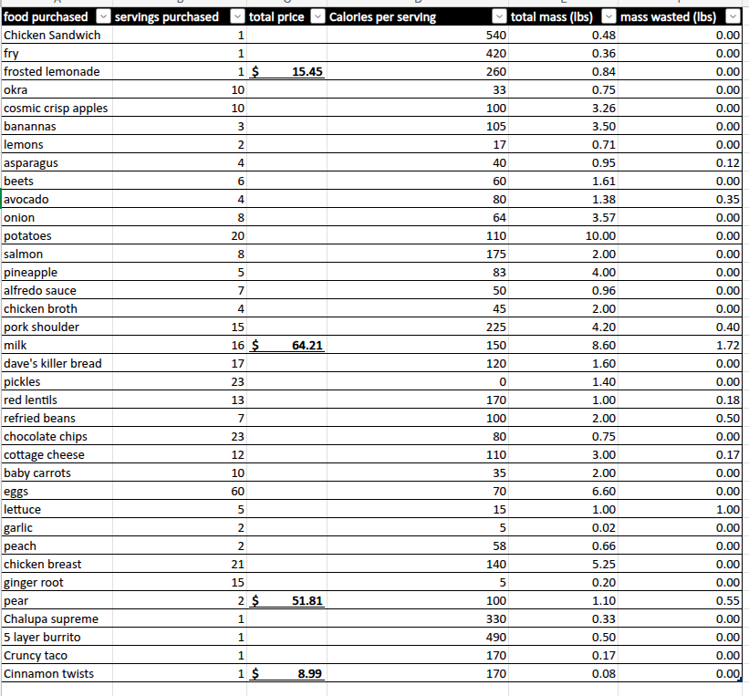

Below is the data collected for food waste and spending.
Spending and Waste Log

Data Collection Notes
As pictured above, the different categories tracked were food purchased, servings for purchase, total price, calories per serving, total mass, and mass wasted.